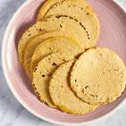

Home
lasagna

Description
Corn tortillas are a type of unleavened flatbread, traditionally made from masa harina, water, and salt. They are a staple in Mesoamerican cuisine, particularly in Mexico and Central America. The process of making them involves nixtamalization, where corn kernels are treated with an alkaline solution to improve their nutritional value and make them easier to grind into masa.
Ingredients
- masa harina (corn flour)
- water
- salt
- wheat flour/li>
- olive oil
Steps
- Preheat the oven to 375°F (190°C). ...
- Spray or lightly brush the tortillas on both sides with oil.
- Cut each tortilla into six triangles and arrange them in one layer on the baking sheets.
- Bake until the chips are crisp and golden brown, 10 to 20 minutes
- Lightly season each chip with salt and then serve